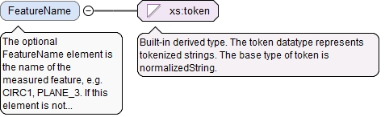

The optional xId attribute is a reference to the id of a QIF object in an external document. A QIF object in an external QIF document can be referenced by using references to two QIF ids: the id of the external document reference of type ExternalQIFDocumentReferenceType found in the local document and the id of the object found in the external document.
Source
<xs:element name="FeatureItemId" type="QIFReferenceType" minOccurs="0"><xs:annotation><xs:documentation>The optional FeatureItemId element is the QIF id of the associated feature item (which will reference feature nominal information).</xs:documentation></xs:annotation></xs:element>
The optional FeatureName element is the name of the measured feature, e.g. CIRC1, PLANE_3. If this element is not present then the feature name will be that defined by the referenced feature item.
Diagram

Type
xs:token
Properties
content
simple
minOccurs
0
Source
<xs:element name="FeatureName" type="xs:token" minOccurs="0"><xs:annotation><xs:documentation>The optional FeatureName element is the name of the measured feature, e.g. CIRC1, PLANE_3. If this element is not present then the feature name will be that defined by the referenced feature item.</xs:documentation></xs:annotation></xs:element>
The optional TimeStamp element is the date and time at which the feature was measured.
Diagram
Type
xs:dateTime
Properties
content
simple
minOccurs
0
Source
<xs:element name="TimeStamp" type="xs:dateTime" minOccurs="0"><xs:annotation><xs:documentation>The optional TimeStamp element is the date and time at which the feature was measured.</xs:documentation></xs:annotation></xs:element>
The optional asmPathId attribute is a reference used for locating the id of an assembly path. If the asmPathXId attribute is not used, the asmPathId is a reference to an assembly path in the AsmPaths of the local document. If the asmPathXId is used, the asmPathId is the local id of an external QIF document, and the asmPathXId is a reference to an assembly path in the external QIF document. The assembly path (instantiation chain) unambiguously identifies a model entity within an assembly.
The optional asmPathXId attribute, if used, is a reference to the id of an assembly path in the external document identified by the asmPathId. The asmPathXId must not be used if the asmPathId is not used.
The optional xId attribute is a reference to the id of a QIF object in an external document. A QIF object in an external QIF document can be referenced by using references to two QIF ids: the id of the external document reference of type ExternalQIFDocumentReferenceType found in the local document and the id of the object found in the external document.
Source
<xs:element name="ActualComponentId" type="QIFReferenceFullType" minOccurs="0"><xs:annotation><xs:documentation>The optional ActualComponentId element is the QIF id of the actual component to which this feature actual belongs.</xs:documentation></xs:annotation></xs:element>
The optional asmPathId attribute is a reference used for locating the id of an assembly path. If the asmPathXId attribute is not used, the asmPathId is a reference to an assembly path in the AsmPaths of the local document. If the asmPathXId is used, the asmPathId is the local id of an external QIF document, and the asmPathXId is a reference to an assembly path in the external QIF document. The assembly path (instantiation chain) unambiguously identifies a model entity within an assembly.
The optional asmPathXId attribute, if used, is a reference to the id of an assembly path in the external document identified by the asmPathId. The asmPathXId must not be used if the asmPathId is not used.
The optional xId attribute is a reference to the id of a QIF object in an external document. A QIF object in an external QIF document can be referenced by using references to two QIF ids: the id of the external document reference of type ExternalQIFDocumentReferenceType found in the local document and the id of the object found in the external document.
Source
<xs:element name="ManufacturingProcessId" type="QIFReferenceFullType" minOccurs="0"><xs:annotation><xs:documentation>The optional ManufacturingProcessId element is a reference to the traceability information for the process used to manufacture this feature.</xs:documentation></xs:annotation></xs:element>
The required n attribute is the number of Id elements in this array.
Source
<xs:element name="MeasurementDeviceIds" type="ArrayReferenceFullType" minOccurs="0"><xs:annotation><xs:documentation>The optional MeasurementDeviceIds element is a list of references to the measurement devices used in the inspection of the feature.</xs:documentation></xs:annotation></xs:element>
The optional ActualTransformId element is the QIF id of the actual coordinate system or actual DRF transform in which this measured feature originated. Note: any coordinate or vector information defining the measured feature is in terms of the common coordinate system. The actual transform is used to map coordinate and vector information between the common coordinate system and the actual coordinate system or actual DRF.
The optional xId attribute is a reference to the id of a QIF object in an external document. A QIF object in an external QIF document can be referenced by using references to two QIF ids: the id of the external document reference of type ExternalQIFDocumentReferenceType found in the local document and the id of the object found in the external document.
Source
<xs:element name="ActualTransformId" type="QIFReferenceType" minOccurs="0"><xs:annotation><xs:documentation>The optional ActualTransformId element is the QIF id of the actual coordinate system or actual DRF transform in which this measured feature originated. Note: any coordinate or vector information defining the measured feature is in terms of the common coordinate system. The actual transform is used to map coordinate and vector information between the common coordinate system and the actual coordinate system or actual DRF.</xs:documentation></xs:annotation></xs:element>
The required n attribute is the number of Id elements in this array.
Source
<xs:element name="NotedEventIds" type="ArrayReferenceFullType" minOccurs="0"><xs:annotation><xs:documentation>The optional NotedEventIds element is a list of QIF ids of noted events that happened during the measurement of this feature.</xs:documentation></xs:annotation></xs:element>
The FeatureMeasurementBaseType is the abstract base type for feature measurements. A feature measurement holds all information for a directly measured or constructed feature, e.g. feature size and feature location.
The id attribute is the QIF id of the feature, used for referencing.
Source
<xs:complexType name="FeatureMeasurementBaseType" abstract="true"><xs:annotation><xs:documentation>The FeatureMeasurementBaseType is the abstract base type for feature measurements. A feature measurement holds all information for a directly measured or constructed feature, e.g. feature size and feature location.</xs:documentation></xs:annotation><xs:complexContent><xs:extension base="FeatureBaseType"><xs:sequence><xs:element name="FeatureItemId" type="QIFReferenceType" minOccurs="0"><xs:annotation><xs:documentation>The optional FeatureItemId element is the QIF id of the associated feature item (which will reference feature nominal information).</xs:documentation></xs:annotation></xs:element><xs:element name="FeatureName" type="xs:token" minOccurs="0"><xs:annotation><xs:documentation>The optional FeatureName element is the name of the measured feature, e.g. CIRC1, PLANE_3. If this element is not present then the feature name will be that defined by the referenced feature item.</xs:documentation></xs:annotation></xs:element><xs:element name="TimeStamp" type="xs:dateTime" minOccurs="0"><xs:annotation><xs:documentation>The optional TimeStamp element is the date and time at which the feature was measured.</xs:documentation></xs:annotation></xs:element><xs:element name="ActualComponentId" type="QIFReferenceFullType" minOccurs="0"><xs:annotation><xs:documentation>The optional ActualComponentId element is the QIF id of the actual component to which this feature actual belongs.</xs:documentation></xs:annotation></xs:element><xs:element name="ManufacturingProcessId" type="QIFReferenceFullType" minOccurs="0"><xs:annotation><xs:documentation>The optional ManufacturingProcessId element is a reference to the traceability information for the process used to manufacture this feature.</xs:documentation></xs:annotation></xs:element><xs:element name="MeasurementDeviceIds" type="ArrayReferenceFullType" minOccurs="0"><xs:annotation><xs:documentation>The optional MeasurementDeviceIds element is a list of references to the measurement devices used in the inspection of the feature.</xs:documentation></xs:annotation></xs:element><xs:element name="ActualTransformId" type="QIFReferenceType" minOccurs="0"><xs:annotation><xs:documentation>The optional ActualTransformId element is the QIF id of the actual coordinate system or actual DRF transform in which this measured feature originated. Note: any coordinate or vector information defining the measured feature is in terms of the common coordinate system. The actual transform is used to map coordinate and vector information between the common coordinate system and the actual coordinate system or actual DRF.</xs:documentation></xs:annotation></xs:element><xs:element name="NotedEventIds" type="ArrayReferenceFullType" minOccurs="0"><xs:annotation><xs:documentation>The optional NotedEventIds element is a list of QIF ids of noted events that happened during the measurement of this feature.</xs:documentation></xs:annotation></xs:element></xs:sequence></xs:extension></xs:complexContent></xs:complexType>